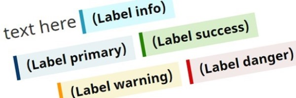

Alerts – GCWeb design system

Alerts are short, temporary notices meant to draw attention to an important message or change. They are often time sensitive. The label, colour, and icon indicate the type of message and its urgency. Alerts are also sometimes referred to as banners.
On this page
- Considering user needs
- When to use
- How to implement
- Design options
- Meeting accessibility requirements
- Complementary components and functions
Considering user needs
Using this pattern with UCD guidance supports:
- Clearly and quickly giving users important information about a topic
- Putting the alert where it is more relevant on a page
- Providing colour, icons and/or text alternatives so users with all abilities can have the same experience
- Using the correct code and hierarchy of information to support screen readers
When to use
Use alerts to
- Display temporary information
- This means that the information itself is temporary, or the need to highlight the information is temporary
- Highlight an important change like a service or site outage, or recent changes to a process or service
- Provide the result of a user-action, such as to confirm success, or notify a person of an error
- Warn a person of a consequence of an action or inaction related to their task, such as a message about what interacting with a 'submit' or 'cancel' button will do
- Summarize a large or complicated change and providing a link to the full details
Do not use alerts to
- Provide information about a normal step in a process or task
- Add emphasis to regular content
- Highlight a warning that is neither high risk nor frequently experienced
- Describe all details of a change or disruption that requires a long explanation
- Highlight something as being new or updated - use labels instead
When to create a central information page instead
For large-scale changes or disruptions, such as those that impact a theme or topic, consider creating a central page that explains the situation in full, and adding a link to it on the theme or topic page.
The central page will provide all of the details about the change or disruption and will be updated as the details change.
The central page will help:
- Keep related alerts short by giving them a place to link to for full details
- Encourage an organized approach for communicating large scale changes
- Reduce the work required to maintain alerts and communicate updates
How to implement
What to include
Alerts should:
- Be short and simple
- Aim for 1 or 2 sentences, if possible
- Include a descriptive title that is concise and specific to the alert content
- Avoid vague or general titles such as "note", "info", "important", etc.
- Describe the impact on the user
- Be tailored to the page on which it appears
- Relate to the content immediately around them
- Use links sparingly
- If a link is needed, only include one
Where to place an alert
Place the alert based on where it applies:
- Entire site
- Place it at the top of the page above the main heading
- Entire page
- Place it underneath the page heading, before the introductory sentence or paragraph but after the rescue link if one is used
- Subsection of the page
- Place it within that subsection, generally under the subsection heading or between 2 paragraphs
Use alerts on pages where services are impacted. Avoid using alerts on general pages such as theme or topic pages.
Limit the number of alerts
Limit the number of alerts on each page and limit the number of alerts used across pages.
When people see a lot of alerts and warning messages, it can create "alert fatigue". The more alerts or warnings people see, the less likely they are to read them.
To avoid creating alert fatigue, only use alerts:
- On a temporary basis
- For the time it takes to integrate the new information or resolve the situation
- For significant situations that impact most users
- On the Canada.ca home page, only use when more than 50% of the population is affected
- On institutional landing pages, only use when more than 40% of users are impacted
If there must be multiple alerts on a page, avoid using expand/collapse, as the alert content should be visible immediately.
Supporting blog post
The more you put into managing your alerts, the more effective they’ll be at communicating your message.
[15 July 2020]
Alerts ajaxed on multiple pages
Use Ajax pulls to place an alert on multiple pages. Ajax pulls are often used for outage message alerts, allowing alerts to be quickly added, removed or modified on multiple pages efficiently.
When ajaxing an alert on multiple pages, ensure that the ajaxed alert:
- Has content relevant to each page
- Includes the word "ajax" in the
idof the pulled content’s code
Keep a list of all affected pages to ensure they are up to date and removed when no longer necessary.
Design options
Appearance
Descriptive title
Content of your alert link text.
HTML code
<section class="alert alert-successalert alert-warningalert alert-danger">
<p>Content of your alert <a href="#">link text</a>.</p>
</section>
Coding considerations:
- Begin
<section>with a heading that is specific to the featured content - Do not use
<section>within another section, or validation issues occur
Use the correct alert
- Info alert (blue)
Use the info alert to draw attention to a clarification of surrounding content or helpful advice, such as the number of weeks it will take to receive a refund when an application is sent by mail vs by phone.
You can also use it for the length of time an application method takes, changes in wait times on a phone line, messages that there is no service disruption for a particular service if that is generating inquiries.
- Success alert (green)
- Use success alert to draw attention to a successful action, such as to confirm a submission, the completion of a task, or when a service disruption is resolved.
- Warning alert (yellow)
Use the warning alert to draw attention to a possible consequence of an action or inaction, such as legal penalty that could apply.
You can also use it to warn the user about delays, closures at certain locations, and other types of service disruptions.
- Danger alert (red)
Use the danger alert to draw attention to a situation that could place someone in danger, such as a do not travel warning, or if there's a risk to health or safety in completing an activity.
You can also use it to alert a person of a technical issue that could cause them to be unable to complete their task, such as an invalid submission of data in a form, when systems are down or a service is cancelled.
Meeting accessibility requirements
The Accessible Canada Act (ACA) requires that content created for the Canada Revenue Agency meets the goal of realizing a barrier-free Canada by 2040. For our digital products, Accessibility Standards Canada follows the European harmonized standard on Information and Communication Technology (ICT) (EN 301 549:2021). The CRA uses the Web Content Accessibility Guidelines (WCAG) 2.1 to meet the ACA, and must be compliant to WCAG level A and AA.
By following the guidance in the User-Centred Design Guide, your web content should meet the following WCAG success criteria:
Complementary components and functions
Additional add-on features and behaviours are available.
-



- Date modified: